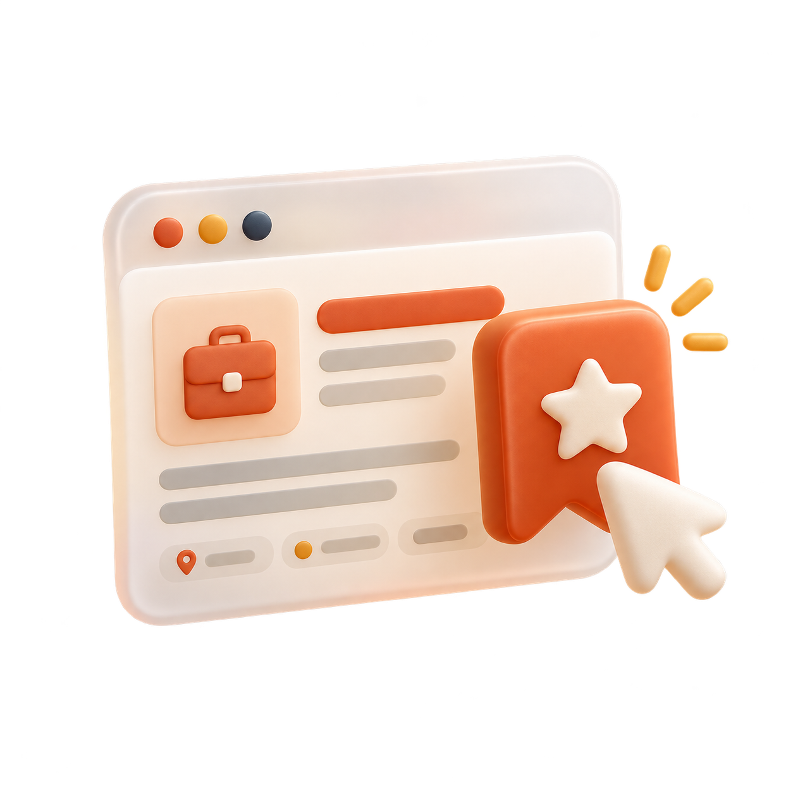

ONE STEP CLOSER
Your job hunt, in focus.
Keep every opportunity and its documents together.
Saved opportunities8
Across your job hunt
Applications sent5
Applied, interview, or offer
In conversation2
At the interview stage
◷ FOLLOW-UPS
Two roles need a check-in.
Notion and Linear · last updated over a week ago.
Your applications 8
See where every role stands.

No matching applications
Try another company, title, or category.
Your master resume is ready.
Use your experience to tailor a resume and cover letter for each new role.
Design concept only. Search, categories, and the follow-up filter work with sample applications. Job actions will use the existing application flows.